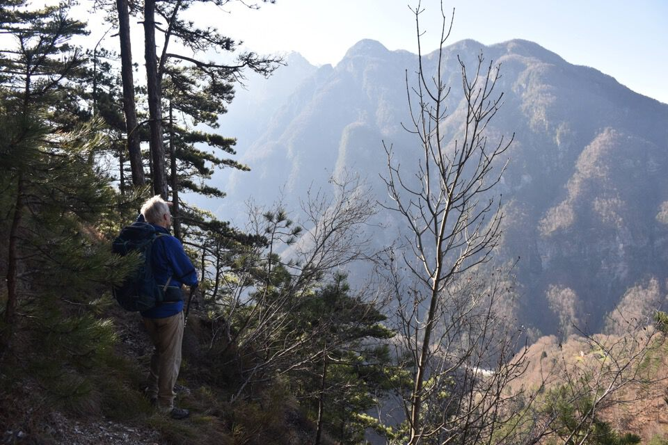
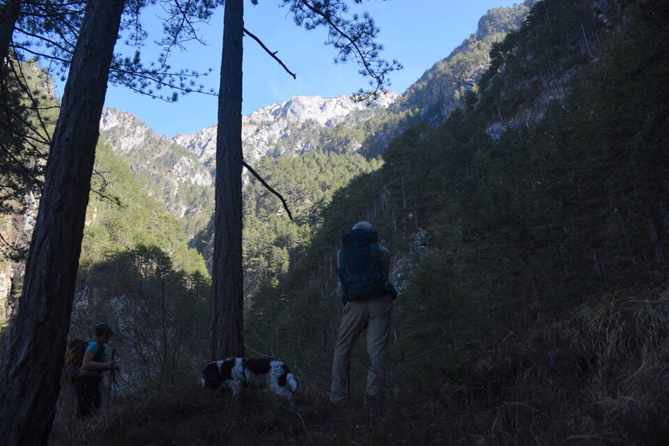
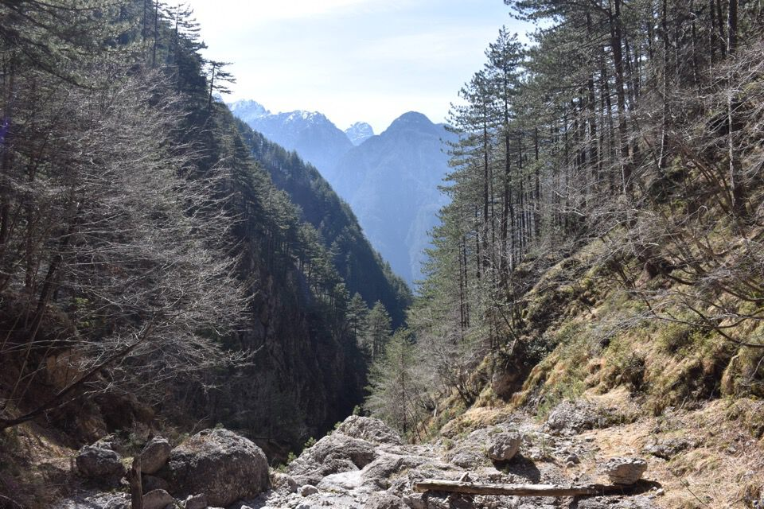
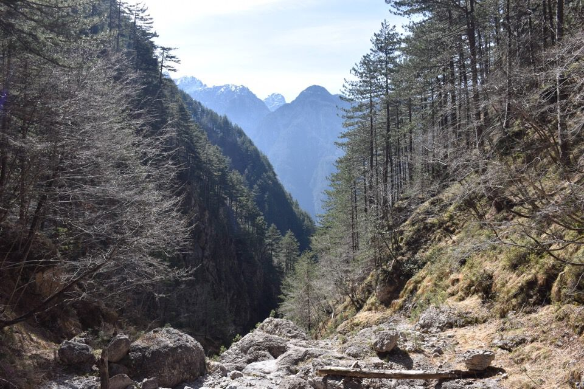
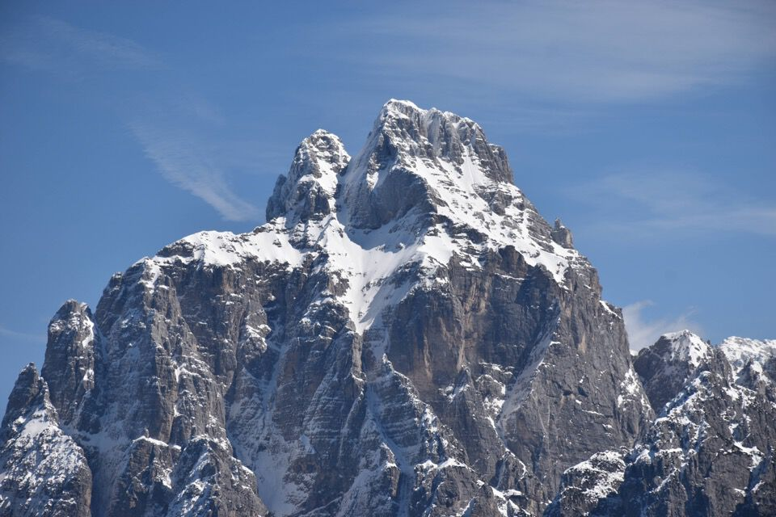
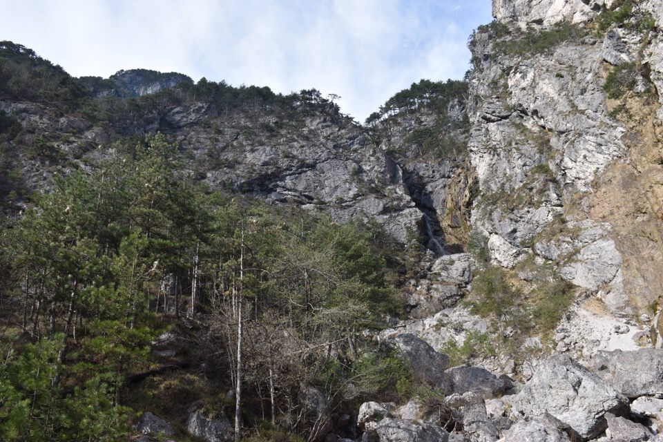

Anello strepitoso, di grandissima soddisfazione. È uno dei percorsi prediletti da Antonio Armellini, autore di Trois Neris, che dello Jôf di Dogna è un grande appassionato ed esperto. Una fortuna per me e Luciana farci guidare lungo questo percorso, dato che altrimenti sarebbero indipensabili diverse esplorazioni preliminari in più.
La salita lungo la via dei cacciatori di Dogna per il rio dei Balins è assolutamente sconosciuta e secondo il mio giudizio è un itinerario difficile, sia come orientamento sia per via di alcuni passaggi.
Lo Jôf di Dogna, inteso come monte nella sua totalità e non in quanto cima (di per sé quasi irrilevante; mai neppure ci sono salito), è davvero interessante e riserva grandi possibilità di esplorazione di vecchie tracce un tempo utilizzate dai valligiani. Ci vuol tempo e dedizione, e per fortuna che è così: la montagna è e deve essere elitaria, affinché ognuno possa trarne soddisfazioni proporzionali al proprio impegno e interesse.
Ripassiamo gli appunti prima della partenza.
Il versante Nord dello Jouf di Sclûse su cui ho transitato due volte, con la forcje di Patoc a dx: secondo me la chiave per salire da Nord sullo Jouf è il costone che delimita in dx orografica il gran canale che si vede in foto (riu da le cjamoçe).
Ed ecco anche il Plananize con le Pale da le Frunt, per dove passa il dimenticato sentiero Patoc - Garlitais.
Superbo il Çuc dal Bôr!
Comunque dal CAI 602 prendiamo il sentiero della presa dell'acqua; questo continua fin nel rio dei Balins, sentiero che viene usato anche dai torrentisti che ahimé l'hanno bollinato tutto di blu. Mortificante.
«Un modo ci deve essere».
L'ingresso nel rio dei Balins è bellissimo.
Con qualche grattacapo riusciamo a trovare il punto in cui scendere nuovamente nel rio, dove c'era la mitica scaletta di tronchi dei cacciatori, che ahimé scopriamo essere stata spazzata via dalle intemperie.
Questa è una foto della scaletta, fotografata da Antonio Armellini nel luglio 2017.
{kind=link}
Mica tanto facile ora eh!
Tipico percorso di camosci che con passaggi ripidissimi ed esposti aggira i salti del rio.
 

Magnifico l'alto rio dei Balins!
Proprio all'ultimo — poco sotto il sentiero f.lla Mincigòs - Pale di Chiout di Gus — quasi a fare un dispetto, il rio presenta una parete alpinistica. Obiettivo di oggi è capire come fanno i camosci ad evitare il salto.
Una traccina ci porta a scoprire l'unico punto debole: un canalino erboso sub-verticale! Ma dopo è anche peggio, seppur breve...
Comodi sentieri degli ungulati.
Ambiente bellissimo.
Finalmente nel bel catino dove passa il sentiero f.lla Mincigòs - Pale di Chiout di Gus.
Laggiù f.lla Mincigòs con il tortuoso percorso per raggiungerla.
Ecco finalmente la sommità delle Pale di Chiout di Gus.
Mentre pranziamo ci gustiamo il panorama, sempre splendido in val Dogna: qui il Fossâl.
Il Ciuc di Vallisetta con la temibile parete Nord affrontata solo da Dougan e mai nessun altro.
Andiamo giù: è vero che io Kelen e Luciana c'eravamo passati poco più di un mese fa per stavolo Canine e il costone Sud, ma avevamo ingenuamente sbagliato percorso! Il vero sentiero non passa per il costone Sud, come segnato in carta Tabacco, ma fa un giro più largo ad Ovest evitando quasi tutto il costone.
Comunque qualche grattacapo l'abbiamo avuto anche qui, ma con pazienza abbiamo ritrovato il sentiero, che in alcuni punti è davvero ottimo.
Stavolo Canine, bel posto.
Casualmente si vede Chiout di Puppe.E da stavolo Compassit ora giù di nuovo verso il rio dei Balins.
L'affioramento di pisoliti ferrose che dà il nome al rio (Terrarossa). Questi sono i balins.
{kind=link}
Altro che bolli rossi o tracce GPS: anni di studi, esplorazioni, fotografie da ogni dove, appunti e tentativi!
Per me un grandissimo esempio da seguire.
«Il segnavia banalizza tutto questo e non permette la restituzione dell'essenza del sentiero come bene culturale. Il rosario dei segnavia è identico alle corde d'acciaio di una ferrata che servono per far salire gente che non ha le competenze per fare il rocciatore; allo stesso modo il segnavia serve a chi non ha conoscenza della montagna». (Trois Neris, p.133)
***
(Emil Cioran, Quaderni 1957-1972)